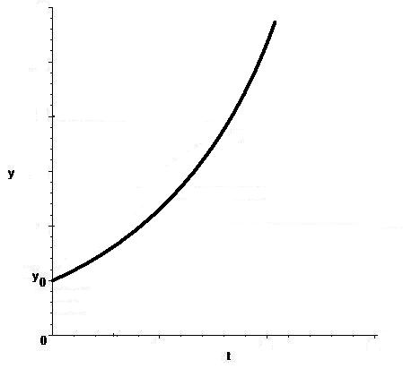

\(\textbf {Дифференциальным}\) уравнение называют уравнение, связывающее независимые переменные, искомые функции и производные от искомых функций.
\(\textbf {Обыкновенным дифференциальным уравнением (ОДУ) }\) называется такое уравнение, в котором искомые функции зависят лишь от одной независимой переменной.
Уравнения, содержащие частные производные функций, зависящих от нескольких переменных называют \(\textbf {уравнениями в частных производных}\).
\(\textbf {Порядком}\) дифференциального уравнения называется наивысший порядок производной, входящей в уравнение.
Общий вид ОДУ \(n\)-ого порядка с одной искомой функцией: \begin{equation}\label{1} F\left( {x,y,y',...,y^{n}} \right) = 0, \end{equation}
здесь \(y\) - искомая функция аргумента \(x\), а \(F\) - известная функция от \((n+2)-х\) аргументов.
\(\textbf {Решением}\) уравнения (\ref{1}) в интервале \((\alpha, \beta)\) называется функция \(y=y(x)\), обращающая это уравнение в тождество в интервале \((\alpha, \beta)\).
\(\textbf {Замечание.}\) Определение решения включает в себя требование возможности его подстановки в уравнение (\ref{1}), в частности, у функции \(y=y(x)\) должны существовать все производные до порядка \(n\) включительно на интервале \((\alpha, \beta)\).
Известную из математического анализа задачу отыскания всех первообразных данной функции \(f\) можно записать в виде уравнения \begin{equation}\label{2} y' = f(x), \end{equation}
где \(f\) - заданная функция, \(y = y(x)\) - неизвестная функция, \(y' = \frac{dy}{dx};\) оно представляет собой простейший пример ОДУ. Как доказывается в интегральном исчислении, если \(f\) непрерывна на некотором промежутке, то уравнение (\ref{2}) имеет на нем бесконечное семейство решений, которое задается формулой \[y = F(x) + C\]
здесь \(F\) - какая-нибудь фиксированная первообразная функции \(f\), а параметр \(C\) пробегает все действительные значения.
Замечательным свойством функции \(y = e^x\) является то, что она совпадает со своей производной; это свойство записывается в виде ОДУ \begin{equation}\label{3} y' = y \end{equation}
решениями которого, наряду с \(e^x\), будут все функции семейства \[y = C\,e^x,\]
где \(C\) пробегает все действительные значения.
На тело (материальную точку) массы \(m\), падающее по вертикальной прямой, принятой за ось \(Oy\), действует сила тяжести \(F = mg \). Если \(y=y(t)\) есть координата точки в момент времени \(t\), то по закону Ньютона (\(m\overline{w}=\overline{F}\), где \(\overline{w}\) - ускорение, \(\overline{F}\) - сила) \[my''=mg,\]
или \begin{equation}\label{4} y''= g, \end{equation}
где \(y''\) - ускорение движущейся точки. Уравнение (\ref{4}) является ОДУ второго порядка с искомой функцией \(y(t)\), разрешенное относительно старшей производной. Легко проверить подстановкой в уравнение (\ref{4}), что его решением является всякая функция \[y=\frac{1}{2}g\,t^{2}+C_{1}t+C_{2},\] где \(C_{1}\) и \(C_{2}\) - произвольные постоянные числа
Модель роста населения (демографический процесс). Из статистических данных известно, что для некоторого региона число новорожденных и число умерших за единицу времени пропорциональны численности населения с коэффициентами пропорциональности \(k_{p}\) и \(k_{c}\) соответственно. Найти закон изменения численности населения с течением времени.
Отвлекаясь от того, что численность населения может измеряться только целыми числами, обозначим \(y=y(t)\) - число жителей региона в момент времени \(t\). Прирост населения за время \(\Delta t\) равен разности между числом родившихся и умерших за это время, т.е. \[\Delta y=k_{p}y(t)\Delta t-k_{c}y(t)\Delta t\].
Разделим обе части равенства на \(\Delta t\): \[\frac{\Delta y}{\Delta t}=ky, k=k_{p}-k_{c}.\] Перейдем в равенстве \[\frac{\Delta y}{\Delta t}=ky\] к пределу при \(\Delta t\rightarrow 0\), получим дифференциальное уравнение \[y'=ky.\]
Подобное уравнение было получено \(\textbf {Мальтусом}\) и называется \(\textbf {уравнением мальтузианского роста}\). Его решение (как можно убедиться непосредственной подстановкой) дается множеством функций \[y=C\,e^{kt},\] где \(C\) - произвольное действительное число. Если известно, что в начальный момент времени \(t=0\) численность населения составляла величину \(y_{0}\), то зависимость численности населения от времени определяется формулой \[y(t)=y_0\,e^{kt}\].
График этой функции \(y(t)=y_0\,e^{kt}\) при положительном коэффициенте \(k\) представлен на рисунке. Анализируя эту зависимость, можно прогнозировать рост численности населения в зависимости от коэффициента естественного прироста и времени.

Эффективность рекламы. Средства массовой информации объявили о поступлении в магазины города нового товара. В начальный момент времени \(t=0\) это известие дошло до \(N_1\) человек из числа \(N\) потенциальных покупателей товара. Нужно найти функцию \(x=x(t)\), которая определяла бы число \(x(t)\) покупателей, узнавших о поступлении товара в момент времени \(t\).
Экономисты считают правдоподобной гипотезу: скорость \(\frac{dx}{dt}\) распространения рекламы (хотя бы <<из уст в уста>>) пропорциональна как \(x(t)\), так и числу людей \(N-x(t)\), еще не знающих о поступлении товара. Коэффициент пропорциональности обозначим буквой \(k\).
Получается дифференциальное уравнение \begin{equation}\label{5} \frac{dx}{dt}=kx(N-x). \end{equation}Мы видим, что, как правило, ОДУ имеет бесконечно много решений. Процесс отыскания решения дифференциального уравнения называется \(\textbf {интегрированием}\) ОДУ (так как почти всегда для нахождения решения ОДУ приходится находить некоторые первообразные).